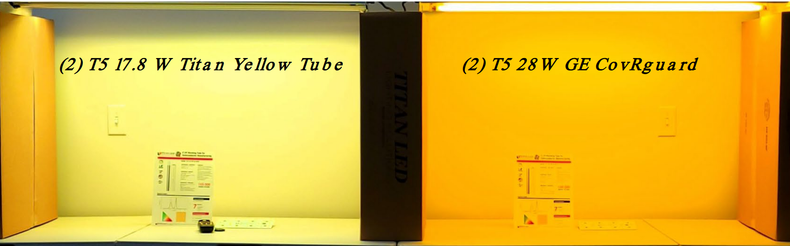
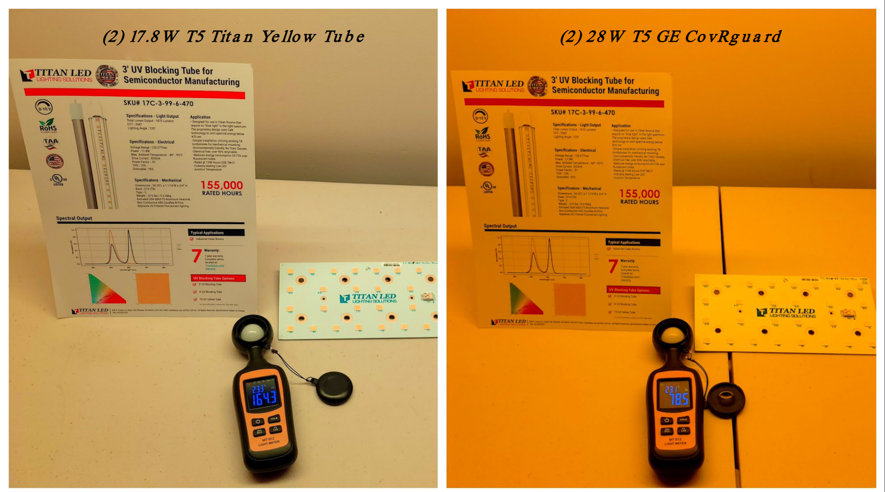
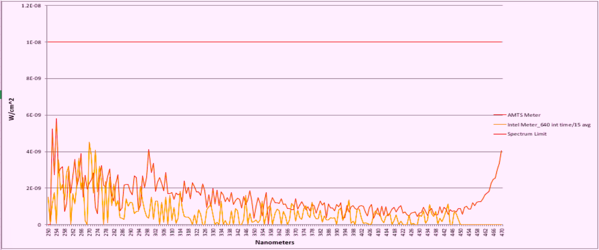

従来の500nmカット品では作業環境が暗くなる課題がありました。Titan独自のデザインは、G線(436nm)への感光リスクを遮断しつつ、470nm精密遮断により明るく鮮明な視界を確保します。 Traditional 500nm-cut filters often create dark, suboptimal working environments. Titan's unique design completely blocks G-line (436nm) exposure risks while maintaining a bright, sharp workspace via 470nm precision cutting.

Titan T-5 Spectrum (Left) vs Standard Fluorescent Filter (Right)
17.8WのTitan T-5は、28WのGE CoverGuardを大幅に凌駕する照度を維持しながら、消費電力を50%以上削減します。 The 17.8W Titan T-5 maintains illumination that significantly outperforms the 28W GE CoverGuard while reducing power consumption by over 50%.

470nm以下の有害なスペクトルエネルギーを完全にブロックし、製造ラインの安全性を担保します。 Completely blocks harmful spectral energy below 470nm, ensuring the safety of manufacturing lines.

なぜ世界中のエンジニアがTITANを選ぶのか。数値が証明する圧倒的な性能差。 Why engineers worldwide choose TITAN. A clear difference in performance proven by numbers.
| 項目Feature | TITAN-T5 Spectrum Select |
T-NET LEDUAL (YM) | PANASONIC LDL40TY |
|---|---|---|---|
| 遮断波長Cut-off | < 470nm (精密遮断Precision Cut) | < 500nm | < 500nm |
| 定格寿命Rated Life | 155,000 時間Hours | 40,000 時間Hours | 40,000 時間Hours |
| エネルギー効率Efficiency | 105 Lm/W (1870lm) | 77 Lm/W (1400lm) | 124 Lm/W (2100lm)* |
| 歪率 (THD)Distorion (THD) | < 10% (精密機器対応Ultra-Low Noise) | ~ 20% | ~ 20% |
| 給電方式Power Design | 外部電源 (熱源分離型)External (Remote) Driver | AC直結 (寿命低下リスク) | 片側給電 |
*パナソニックは数値上の効率は高いが、Titanの方が視覚的に明るく・高精度なUV遮断を提供します。
一般的なLEDとは異なり、熱源となるドライバーを外部に配置。「熱源分離型」によりLEDチップへの熱負荷を物理的に排除し、過酷な環境下でも従来比4倍の寿命を実現しました。 Unlike generic LEDs, the heat-generating driver is placed externally. This separation physically removes the thermal load from the LED chips, achieving 4x longer life in demanding environments.
コストメリット:Cost Benefit: 交換頻度を4分の1に減らすことで、作業人件費を**75%削減**し、交換作業に伴う塵埃発生リスクを最小限に抑えます。 Reducing replacement frequency to a quarter cuts labor costs by **75%** and minimizes contamination risks from maintenance work.
17年以上の期待寿命(24/7稼働時)に裏打ちされた安心感と、メーカーによる7年間の長期一貫保証を提供します。既存ソケット(G13/T5/T8)をそのまま利用可能なレトロフィット仕様です。 Providing security backed by a 17+ year expected life (24/7) and a comprehensive 7-year factory warranty. Simple retrofit into existing G13/T5/T8 sockets.
導入環境に合わせて、各種サイズ及び紫外カットレベルを選択可能です。 Select various sizes and UV cutoff levels tailored to your specific deployment environment.
| モデル (型番) | サイズ (Length) | 消費電力 (Power) | 全光束 (Lumens) | カットオフ波長 | 電気仕様 |
|---|---|---|---|---|---|
| Titan Gold Select 2FT T5 / T8 対応 |
600mm (2フィート) | 13 W | 1,360 lm | 470nm 遮断 | 120-277V THD<10% 力率 >0.91 |
| Titan Gold Select 3FT T5 / T8 対応 |
900mm (3フィート) | 16 W | 1,500 lm | 470nm 遮断 | 120-277V THD<10% 力率 >0.91 |
| Titan Gold Select 4FT T5 / T8 対応 (標準サイズ) |
1200mm (4フィート) | 18 W | 1,870 lm | 470nm 遮断 | 120-277V THD<10% 力率 >0.91 |
| Titan Clarity Select 4FT 精密UVカット・高演色 |
1200mm (4フィート) | 18 W | 2,010 lm | 特定UV領域 遮断 | 120-277V THD<10% 力率 >0.91 |
貴社の技術担当者様、あるいは主要顧客での検証用に、実機サンプルを無償で提供いたします。 We provide evaluation units at no cost for validation by your technical engineers or for end-client vetting.